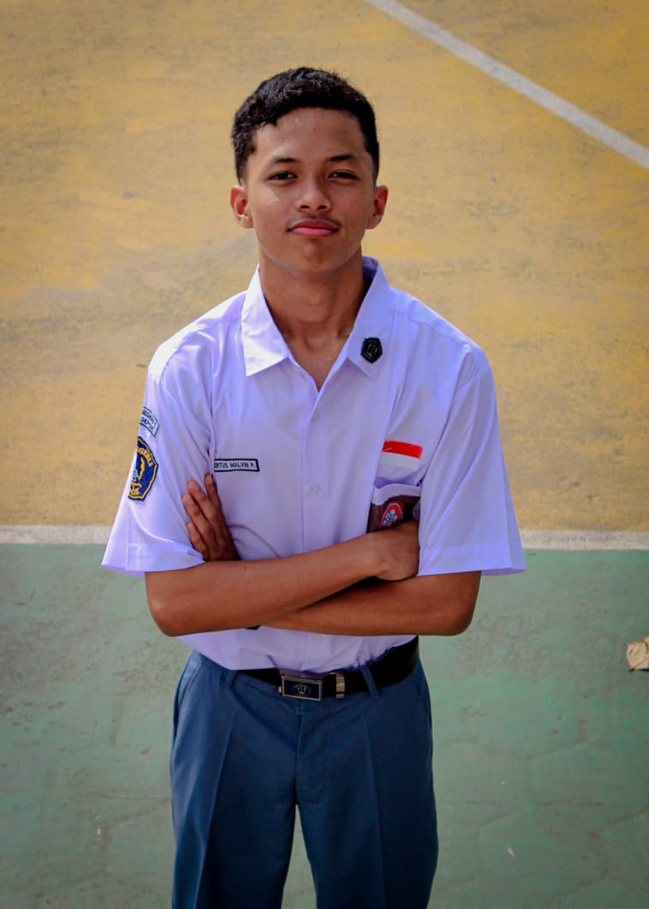

Siswa SMA tampan, sigma, tuff, asik, pendiam, dingin, pelawak, suka bercanda, dan kurang sosial yang senang otak-atik game dan Ai. Di sini adalah kumpulan apa saja yang sudah aku pelajari, apa yang sedang aku bangun, dan beberapa prestasi di sepanjang jalan.

Ketertarikanku sama "otak-atik laptop" dimulai sejak kelas 4 SD. Awalnya cuma bikin game dalam PowerPoint dan animasi sederhana pakai Pivot Animator. Dari situ aku mulai coba bikin game Minecraft di Code.org, dan sejak itu aku kepincut sama coding.
Belajarnya lanjut ke Scratch, HTML, Roblox Studio, dan Python yang sampai sekarang masih terus aku dalami, kebanyakan secara otodidak, terutama di Roblox Studio.
masih mendalami AI dengan PythonSebagian besar dipelajari otodidak, sebagian lewat kursus.
Log singkat dari kursus dan pendidikan yang membentuk diriku sekarang.
Beberapa kompetisi yang pernah aku ikuti. Daftar ini akan terus bertambah.